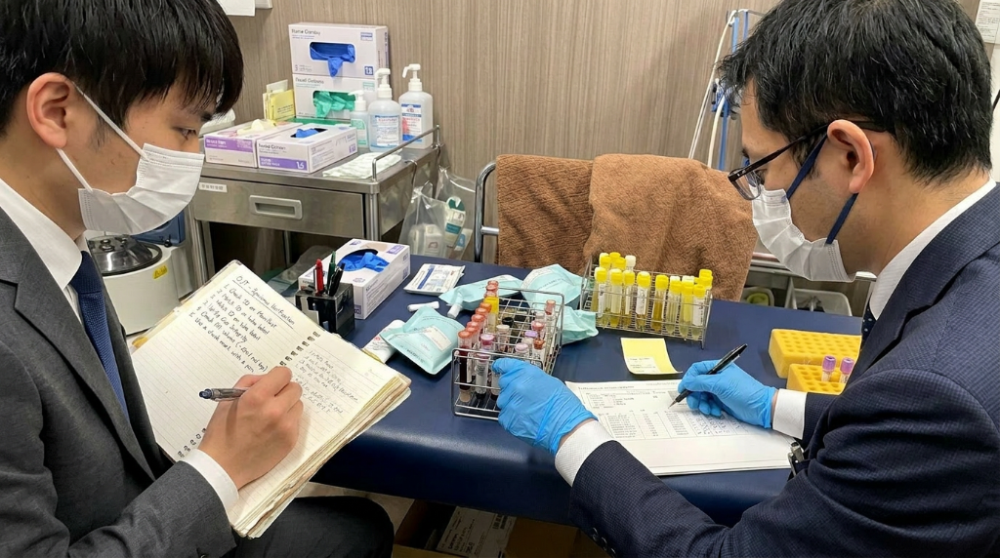
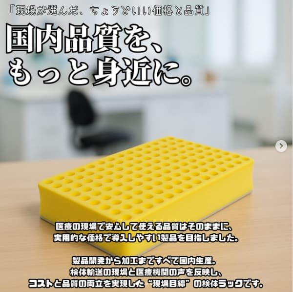
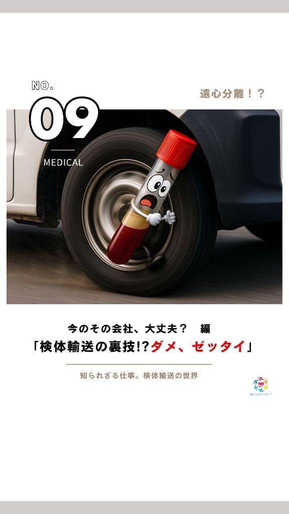
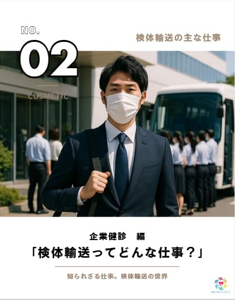
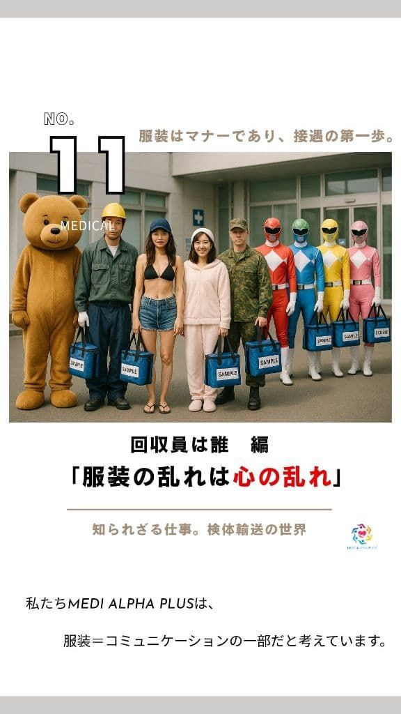
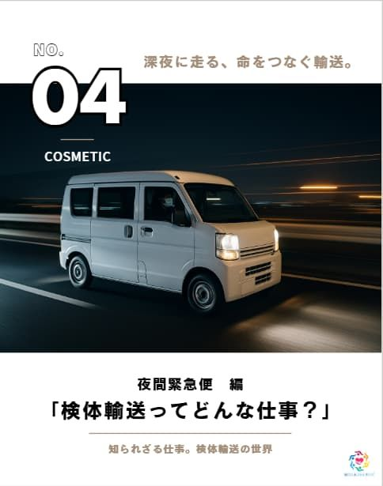

検査会社・医療機関・SMO・CRO・研究機関・医療SPD・物流サービスが直面する「輸送の困りごと」に、MEDI ALPHA PLUSはすべて即答します。
「医療輸送」「衛生消耗品」「輸送支援」の3事業を軸に、検体輸送・治験輸送・照合業務など専門対応から、物流コース設計まで一括して担える体制を整えています。
全スタッフにスーツ着用・接遇教育を徹底。清潔感と正確性が求められる医療現場においても、安心して任せられる品質と当日対応力を実現しています。
医療物流・検体輸送に関することは、すべてお任せください。
今すぐ相談する医療・検査現場の最前線でご活用いただいている、
実際のご担当者様からの声をご紹介します。

日々の業務で細かい時間指定が必要な場面も多めですが、毎回その都度きめ細かく対応していただけています。スタッフの方の礼儀正しさも安心感につながっています。

既存の検査機関から今後の受付継続が難しいとの案内を受け、運用の見直しを余儀なくされました。その中でMEDI ALPHA PLUS様にご相談したところ、非常に真摯に対応いただき、状況に応じた複数の提案をいただきました。検査センターとのネットワークも活かし、現実的な選択肢を提示していただけたことが印象的でした。結果として輸送費は多少上がりましたが、これまでと変わらない運用を維持したまま継続できたことに大変満足しています。

急なご依頼にも関わらず、迅速な日程確約と確実な輸送対応をしていただき、大変助かっております。研究の特性上、予算やスケジュールの確定が難しく、これまでは複数の輸送会社へ都度確認を行っておりましたが、現在はMEDI ALPHA PLUS様に一括してお願いしています。柔軟かつスピーディーに対応いただけるため、安心して任せられるパートナーとして非常に心強く感じています。また、スタッフの皆様が若く活気にあふれている点も印象的です。今後ともよろしくお願いいたします。

内製で対応しきれない部分が増えてしまい、思い切って御社にお任せしていただきました。依頼してからというものとても様々に柔軟な変更をしていただき、おかげで業務が非常に円滑になりました。

新しいプロジェクトが始まるたびに、立地や環境面も考慮した上で、中間に立って依頼の調整をしていただきました。担当を分担していただいたことで非常に心強く、プロジェクトをスムーズに遂行できました。現在も現場でメインスタッフとして継続して対応いただいており、大変ありがたく感じています。本社へも足を運んでいただき、商談の場では進捗共有や新たな提案を丁寧に行っていただきました。難易度の高い案件や調整が難しい内容でも、無理のない整理された運用にまとめていただけることが、安心して長くお任せできる理由です。

急な人員不足により、既存の輸送会社では対応が難しい状況となり、半ば諦めながらMEDI ALPHA PLUS様へご相談させていただきました。ご相談後すぐに弊社へお越しいただき、具体的かつ丁寧なヒアリングを行っていただいたことが印象的でした。費用は従来より多少上がりましたが、提示いただいた内容や内訳に納得感があり、社内稟議も問題なく承認されました。結果として、品質・対応ともに非常に満足しており、「お願いしてよかった」と感じています。現在は導入から3ヶ月が経過し、安定した運用が継続できています。
24時間365日の緊急受付体制を整備。急な欠員・突発的な回収依頼にも、最短当日・2時間以内出動を基本とします。 「今すぐ動ける」輸送パートナーを探しているなら、まずお電話ください。専任チームがすぐにご対応いたします。
UN3373適合包装・個人情報保護・温度管理（常温〜−79℃）を車両選定段階から徹底。 検体の特性・検査センターとのネットワーク・SMO/CRO向け治験輸送の規制知識まで、現場経験者が直接対応します。 スーツ着用・接遇教育を全スタッフに徹底し、医療機関の品格に合わせた対応品質を維持します。
軽バン（狭い駐車場・多拠点巡回）・特殊トラック（大量医療資材・ウォークイン対応）・バイク（市街地緊急便）を保有。 複数施設の定期巡回・単発スポット・曜日指定便など、貴院のオペレーションに合わせたカスタマイズ対応が可能です。 「こういう運び方ができるか？」という相談からぜひお声がけください。

拠点を中心に、全国どこでも対応いたします。
東京・埼玉・神奈川・名古屋・神戸の各拠点を起点に、日本全国の医療検体輸送に対応しています。
エリア外もご相談ください。陸送・航空便・新幹線を組み合わせた柔軟な輸送体制で、
どの地域でも迅速にご対応いたします。
現場を知る私たちだからこそ、
最適な供給ができる。
MEDI ALPHA PLUSでは、医療検体輸送の現場で培った知見をもとに、
尿検査キットや各種衛生消耗品を提供しています。
日々の大量取引による仕入れスケールを活かし、コストを抑えた継続供給が可能です。
単なる販売業者ではなく、「医療現場発の供給パートナー」として課題解決をご支援します。
毎日稼働する検体回収ルートを活用し、大型倉庫からのピッキング〜納品まで
別途業者不要・追加コストほぼゼロで一括対応します。
従来、検体回収と消耗品納品は「別の業者・別のコスト」でした。
MEDI ALPHA PLUSは毎日走る自社便を活用することで、両方を1回のオペレーションで完結。余計な発注・手配・コストをまるごと削減します。
日々の取引量を活かし、安定した価格での供給を実現。単発ではなく継続的にコストメリットをご提供します。
検体輸送・医療現場を熟知しているため、実際の使いやすさや運用に基づいた商品選定・提案が可能です。
物流事業を持つ当社だからこそ、欠品リスクを抑えた安定供給と迅速な対応を実現しています。
ロット・納品形態・仕様など、現場に合わせた柔軟な対応が可能です。標準品から特注対応まで幅広く承ります。
検体回収の既存ルートを活用し、商品の納品も同時に対応。日々稼働している輸送ネットワークに組み込むことで、新たな配送コストを抑え、効率的かつ低コストな供給を実現します。
見積依頼・商品サンプル・カスタマイズ対応など、専任スタッフが丁寧に対応いたします。
検査会社・医療機関・SMO・CRO・研究機関の方、
専任スタッフが最短当日でご対応いたします。
私たちをフォローする
最新情報・現場の声・サービス案内をリアルタイムでお届けします。
LINEでお気軽にご相談、Instagramで日々の現場をチェック。
お見積もり
当日中にご対応いたします。
プロフェッショナル。
今後も現場活動・業界情報・取り組みを精力的に配信予定。
リアルを発信中！
フォローして最新情報をチェック。


▶ Reel
▶ Reel

▶ Reel